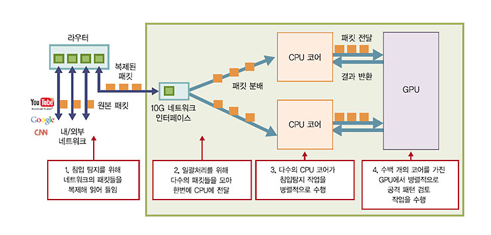
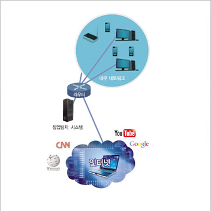

Report by Subjects
Report by Subjects
KAIST RESEARCH ACHIEVEMENTS
Kargus: A Software-based High-Speed Intrusion
Detection System
Department of Electrical Engineering
KyoungSoo Park and Yung Yi
Summary
A network intrusion detection system (NIDS) is a real-time network security monitoring system that detects malicious attacks in the Internet. Existing NIDS tools either show poor performance or require expensive dedicated hardware to operate on high-speed networks, which limits their wide-scale deployment. In our research, we present a low-cost but highly-scalable software-based NIDS using batch- and parallel processing techniques on commodity hardware that harnesses GPUs and multi-core CPUs. Our NIDS prototype delivers world record-breaking performance: 33 Gbps for synthetic packets, 12.5 Gbps even when all packets are malicious, and 25 Gbps for real network traffic.
R&D Report
We expect that this highly flexible and affordable software-based NIDS can monitor not only the enterprise, campus, or government networks, but also cloud server-farms and LTE backbone networks. Furthermore, the NIDS has high potential for commercialization since it is implemented to be compatible with Snort rule-sets. Technology transfer for Kargus is under active discussion.
Malicious network attacks are posing serious threats to the stability of the Internet. These attacks are orchestrated by software programs known as malware that generate email spams, online phishing, and even distributed denial of service (DDoS) attacks. In order to effectively respond to network attacks, there is an urgent need to develop a fast and affordable network intrusion detection systems that can scale well in high-speed networks.
Existing network intrusion detection systems (NIDSes) are either built on commodity machines by software or they are developed on dedicated hardware. Software-based NIDS tools are easier to maintain and configure. However, such solutions have traditionally shown sub-par performance when deployed in high-speed networks where network bandwidth exceeds several 10s of gigabits per second. On the other hand, hardware-driven NIDS solutions, such as those built on ASIC boards, scale well but are often too costly to be deployed widely or too rigid to adopt new attack signature matching algorithms.
We present a software-based NIDS architecture that adopts batch- and parallel processing techniques that guarantees high flexibility and scalability while limiting the overall cost by utilizing general-purpose hardware. We implement the NIDS on an off-the-shelf server and show a world record-breaking performance with it. Moreover, our NIDS is compatible with Snort rule-sets, the most widely-used open-source attack signatures library.
 Figure 1. The workflow of our software-based network intrusion detection system using multi-core CPUs and general-purpose GPUs
In the network, data is divided into small pieces, called packets, the unit of transmission. The set of packets belonging to a network communication session is called a flow. A NIDS checks whether packets or flows include specific attack patterns by employing deep packet inspection techniques. The attack patterns may consist of strings, regular expressions or other optional modifiers that have been developed from actual intrusion attempts in the past. These patterns are then managed as a database. In our NIDS, users can add or modify the attack patterns freely.
The figure below illustrates how our NIDS works. A network switch or a router copies incoming and outgoing packets, and transfers them to our system. The network interface card (NIC) reads the packets and distributes them over CPU cores via internal NIC hardware queues using Receive Side Scaling (RSS). RSS guarantees that packets are uniformly scattered across several CPU cores. We also adopt the batch processing technique which allows hundreds of packets to be read by each CPU core at once (rather than per-packet read) that amortizes the overall cost of analysis. Each CPU core finally checks for the existence of attack packets. We offload the most computationally-intensive packet analysis tasks, attack string and regular expression matching operations, to Graphics Processing Units (GPUs). GPUs are adept at highly-parallelized computations as they host hundreds of cores that operate independently of each other. The GPU is offloaded a batch of packets that are analyzed simultaneously, which enhances the overall performance of packet analysis. As a result of these enhancements, our NIDS shows 33 Gbps analyzing throughput when tested against normal traffic, and more than 10 Gbps analyzing throughput in the worst case even when whole ingress traffic is malicious (previous software-based NIDSes show only 1~2 Gbps performance in this case).

Research Funding
130 million won from National Security Research Institute (NSRI) and 100 million won from National Research Foundation of Korea (NRF) Research Results
Research Results
- Patents Pending: 1 patent filed in Korea UPaper Publication: 1 paper published at ACM Conference on Computer and Communications Security
(CCS), 2012: the first ever paper from Korea to be presented in the conference.